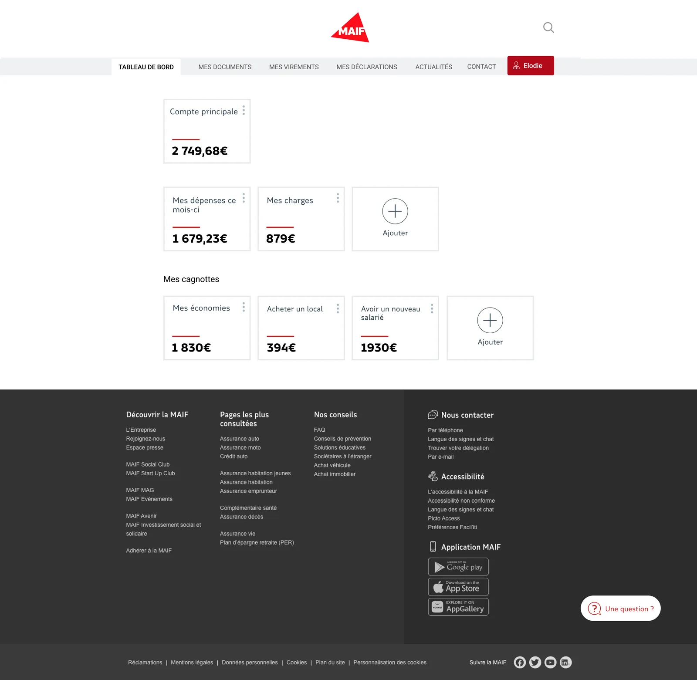

Un assureur peut-il accompagner ses sociétaires au-delà de leurs contrats ? C’est la question que nous a posée MAIF Innovation. Pendant trois mois, j’ai travaillé sur un projet d’études autour de l’open banking.
Avec Clément H, nous avons conçu un service de gestion financière pour l’espace MAIF. L’idée : retrouver vite les infos et les actions du quotidien, et trouver de l’aide quand on en a besoin.
Contexte et objectif
L’open banking permet de réunir des données bancaires et de construire des services par-dessus. Pour la MAIF, il fallait trouver une proposition vraiment utile à ses sociétaires. Avec une contrainte forte : on touche à des données financières, donc la confiance et la sécurité passent en premier.
Nous sommes partis des "premières fois" de la vie active : premier loyer, premiers impôts, premiers achats à gérer seul. Après avoir exploré plusieurs profils, nous avons resserré le concept sur les micro-entrepreneurs et leur gestion au quotidien.
Deux personas pour cadrer
Pour rendre les besoins concrets, nous avons construit deux personas. Ils sont fictifs : ce sont nos hypothèses de travail, pas une synthèse d’entretiens.
Deux parcours, deux situations
Utilisatrice A
Élodie
26 ans · Célibataire · Orléans
Micro-entrepreneure depuis deux ans. Active, plutôt introvertie. Elle aime se dépasser, mais s’y perd parfois entre ses droits, ses dépenses et ses charges.
Objectif : dégager un budget pour développer son entreprise, et trouver des conseils quand un problème de stock survient.
Au quotidien : paiements clients, taxes, charges. Son besoin : savoir ce qu’elle peut engager sur un projet sans perdre de vue les dépenses à venir.
Utilisateur B
Antoine
28 ans · Marié, un enfant · Pau
Micro-entrepreneur dans la vente à domicile depuis deux mois. Actif, sociable, plutôt extraverti. Il aime rendre service, mais découvre encore le budget de sa jeune activité.
Objectif : mieux gérer son entreprise et prévoir son budget sur un an ou plus.
Comme Élodie, il suit paiements clients, taxes et charges. Son besoin : distinguer clairement les entrées et les sorties d’argent pour préparer ses décisions.
Des besoins aux scénarios
Ces deux profils couvrent deux situations : intégrer de nouvelles dépenses à son budget, et réagir quand un imprévu perturbe l’activité. De là sont venus nos choix de conception : une vue synthétique des flux, des cagnottes rattachées aux projets et un accès à l’aide toujours visible.
Du benchmark à l’arborescence
Nous avons commencé par une veille et un benchmark des services existants. Les personas et les scénarios ont ensuite transformé cette recherche en parcours concrets : consulter ses dépenses, retrouver ses documents, préparer une démarche liée à son activité.
J’ai organisé ces usages dans une arborescence : tableau de bord, dépenses, documents, guide, contact. C’est elle qui a servi de base aux wireframes, puis aux maquettes et au prototype interactif.
Les actions du quotidien en premier

Le service existe sur mobile et sur le web. Le tableau de bord réunit le compte principal, les dépenses et les charges, avec des raccourcis personnalisables. Les cagnottes matérialisent un projet, comme l’achat d’un local ou le recrutement d’un salarié, et montrent où on en est par rapport à l’objectif.
Pour aider à anticiper, l’utilisateur peut qualifier une opération récurrente comme charge ou comme crédit. Le tableau de bord affiche alors une estimation du solde en fin de mois.
Côté web, le parcours imagine une connexion à l’Urssaf et l’accès à une déclaration depuis l’espace MAIF. Avant toute connexion, une demande d’autorisation de partage des données : sur des données financières, c’est là que la confiance se joue.
L’aide est intégrée au parcours : contenus explicatifs, guide et contact restent à portée de main dès qu’une question se pose.
Deux scénarios nous ont servi à dérouler et discuter les parcours. Antoine signale un problème de stock depuis son téléphone, puis consulte une réponse ou contacte un conseiller. Élodie prépare un nouveau projet et intègre les dépenses prévues à son budget.
Mon rôle et la collaboration
J’ai pris en charge la conception UX/UI, l’architecture de l’information, les parcours et le prototypage sur Figma. Clément H a travaillé sur le contenu, la recherche et la restitution.
Nous avons avancé par étapes, avec des points réguliers pour partager les propositions, intégrer les retours et ajuster le concept. Pour la présentation, nous avons fait une démo du prototype : discuter des choix de conception sur un parcours cliquable, c’est beaucoup plus concret.
Ce que j’en retiens
Sur un service financier, l’écran principal ne fait pas tout. L’arborescence, la demande de consentement et l’accès à l’aide comptent autant : c’est ce qui rend le service lisible et crédible.
Si c’était à refaire, je confronterais plus tôt nos parcours à de vrais micro-entrepreneurs. Les personas fictifs font gagner du temps au démarrage, mais l’estimation de fin de mois et la connexion à l’Urssaf méritent d’être testées avec les personnes concernées.